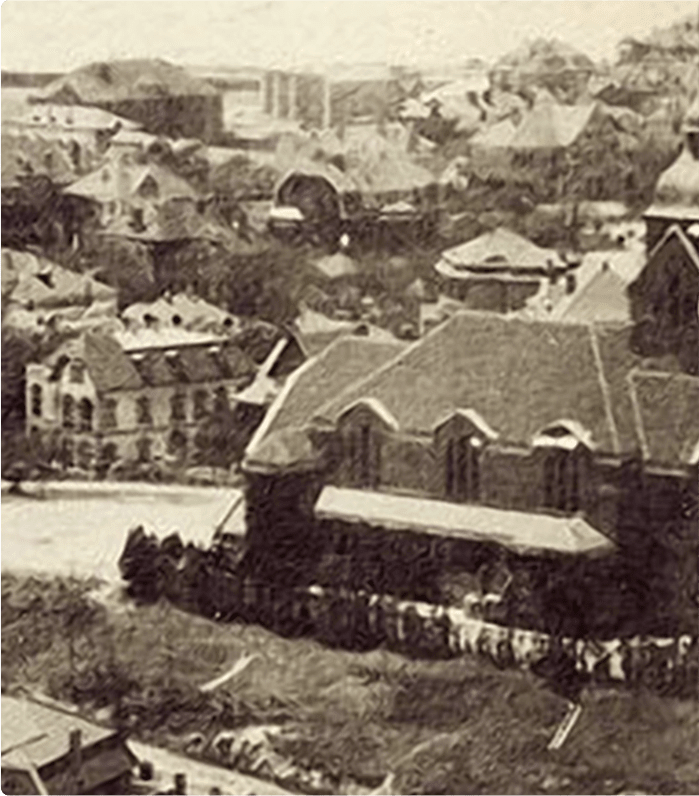
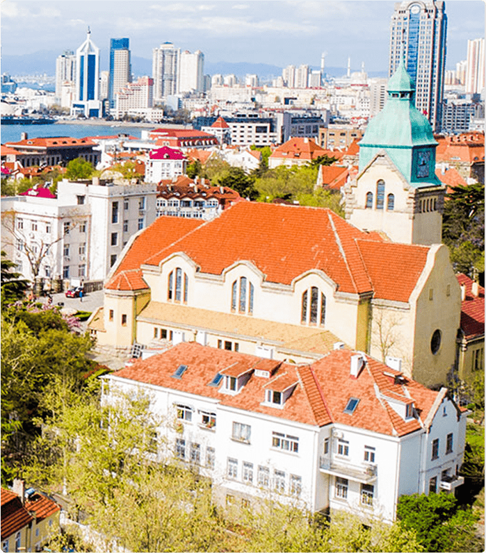
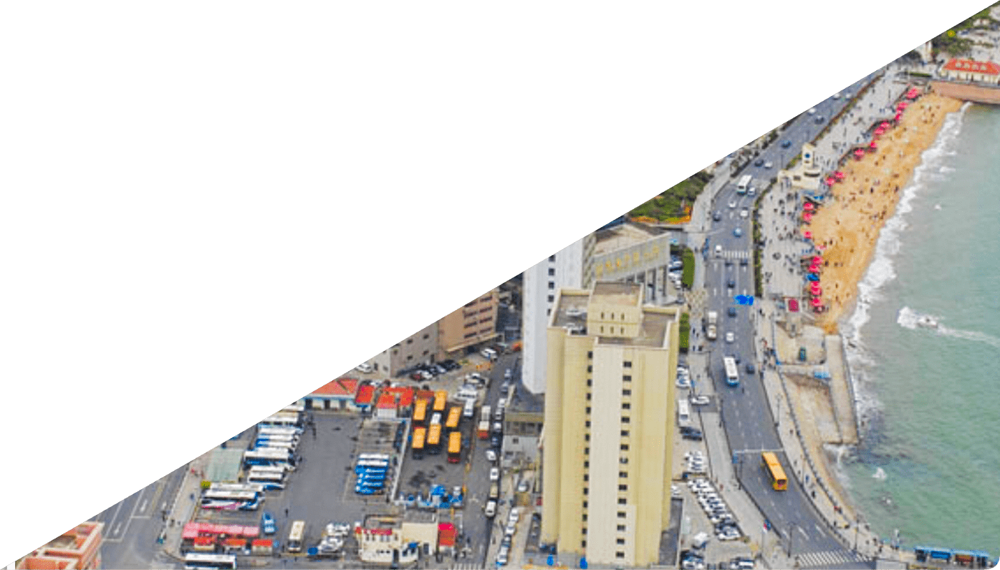
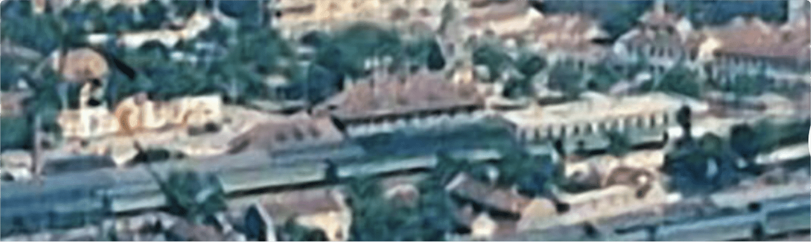
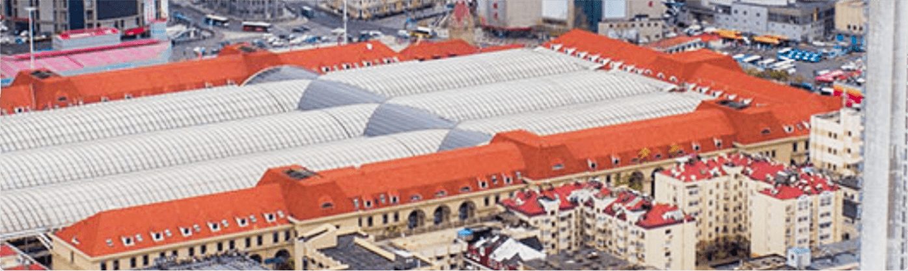

今年是新中国成立70周年，也是青岛解放70周年。100年前的五四风云，把青岛这座城市与国家命运紧紧地联系在了一起。作为五四运动的源起地，青岛，这个中国北方最年轻的滨海城市之一，在建置之初就超越了同期崛起的大多数城市，之后的百余年间，它也曾倒退或止步不前，但旋即重新上路，再开新篇，其一波三折可谓一部浓缩的城市美学史。

“绿树青山，不寒不暑，碧海蓝天，可舟可车，中国第一”。文人墨客对青岛的高度评价，开启了青岛“网红”城市的历史。除了北京、天津两个直辖市之外，青岛不但是北方经济最强的城市，也是中国最具旅游吸引力的城市之一。许多人提到青岛都会有一种莫名的好感与向往，更别说我们这些生活在这里的人们对家乡赤诚的热爱。


青岛建置虽仅有120余年的历史,但城市百年变迁却可谓是沧桑巨变。所幸的是,我们可以通过各个时期的照片来了解彼时的青岛。今天，让我们穿越时光隧道，去找寻光影中青岛的昨日和今朝。这是一部浓缩的城市发展史，也可以管窥百年中国之巨变。
查看历史变迁